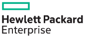
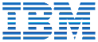

Integrated technology.
Accountable delivery.
Qartexa helps organizations across Rwanda and Africa design, integrate, secure and support the technology environments their operations depend on.
Rwanda-based delivery • Supporting organizations across Africa
Technology that works together.
Explore the practices Qartexa brings together to plan, build and support dependable technology environments.
Infrastructure & cloud
Resilient infrastructure, cloud environments and power for critical services.
Digital Infrastructure ↗Cloud & Modern Workplace ↗Power & Energy ↗Explore all solutions →Security & continuity
Protection for users, systems and facilities, supported by ongoing operations.
Cybersecurity ↗Physical Security ↗Managed ICT Services ↗Explore all solutions →Applications & intelligence
Applications, connected assets and data supporting digital transformation.
Software Engineering ↗AI & Digital Transformation ↗IoT & Smart Solutions ↗Banking Technology ↗Explore all solutions →Advisory & delivery
Technology advice aligned with objectives, risk and delivery capacity.
ICT Consultancy & Professional Services ↗View all solutions →Built around the way your sector works.
Technology environments shaped for the needs of public services, enterprises and essential industries.
Global technology. Local delivery.
Qartexa works with established technology manufacturers and distribution partners, combining their platforms with local engineering and client-focused implementation. We select solutions for project requirements and long-term value.
Explore our technology ecosystem →Technology brands in Qartexa's ecosystem.


Technology is selected to meet each project's requirements and long-term support needs.
Let’s build the right technology foundation.
Share the challenge you are working through. Qartexa can help you define a practical next step.